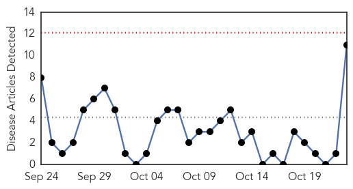
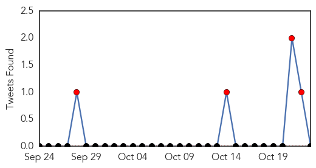
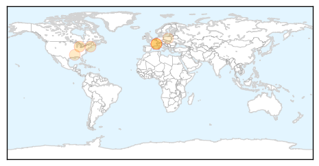

30 Day Trends
Web: 0 alerts, 0 warnings
Twitter: 4 alerts, 0 warnings
Top Articles:
- 0.779
- Two school districts, 1 case, 1 possible case of viral meningiti
- 0.750
- Crandon Schools Open Amidst Viral Meningitis Cases
- 0.727
- WHO expert panel urges pilot roll-out of first malaria vaccine
- 0.704
- Dachel Media Update: NYT and Karen Weintraub
- 0.693
- WHO expert panel urges pilot roll-out of first malaria vaccine
- 0.690
- WHO expert panel urges pilot roll-out of first malaria vaccine
- 0.677
- WHO expert panel urges pilot roll-out of first malaria vaccine
- 0.669
- WHO expert panel urges pilot roll-out of first malaria vaccine
- 0.643
- Doctors May Be Discouraging HPV Vaccination
- 0.618
- WHO expert panel urges pilot roll-out of first malaria vaccine
- 0.581
- Polish Study Confirms Vaccines Can Cause Large Number of Adverse Effects
Top Tweets:
-
No tweets found for Oct 23, 2015
Web/News Articles
Tweets
Article Locations
Article Confidences